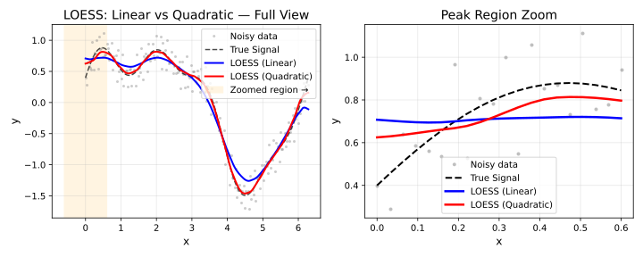

Overview
At each target point, LOESS fits a polynomial to the neighbouring
data using weighted least squares. The degree parameter
controls the order of that polynomial.

| Degree | Local Fit | Captures | Risk |
|---|---|---|---|
0 / "constant"
|
Weighted mean | Level only | Over-smooth; edge bias |
1 / "linear"
|
Weighted line | Trend (default) | Rarely overfits |
2 / "quadratic"
|
Parabola | Curvature | Overfits with small fraction
|
3 / "cubic"
|
Cubic curve | Inflections | Requires larger fraction
|
4 / "quartic"
|
Quartic curve | Fine structure | High variance, rare |
Degree can be specified as an integer
(0L–4L) or as a string
("constant", "linear",
"quadratic", "cubic",
"quartic").
Degree 0 — Local Constant
The fit at each point is a weighted mean. Produces very smooth results but ignores local slope, introducing bias wherever the true function changes.
Use when: Maximum smoothness matters more than accuracy; computationally cheapest.
library(rfastloess)
set.seed(42)
x <- seq(0, 2 * pi, length.out = 100)
y <- sin(x) + rnorm(100, sd = 0.3)
model <- Loess(degree = "constant", fraction = 0.5)
result <- fit(model, x, y)
cat("First 6 smoothed values (constant/Nadaraya-Watson):\n")
#> First 6 smoothed values (constant/Nadaraya-Watson):
print(head(result$y))
#> [1] 0.4694689 0.4748509 0.4785029 0.4798484 0.4836073 0.4936813Degree 1 — Local Linear (Default)
Fits a weighted line through the neighbourhood. Removes first-order bias and handles boundary regions correctly. The right choice for the vast majority of applications.
Use when: Default; monotone or gently curved data; boundary accuracy matters.
model <- Loess(degree = "linear", fraction = 0.5)
result <- fit(model, x, y)
cat("First 6 smoothed values (linear local regression):\n")
#> First 6 smoothed values (linear local regression):
print(head(result$y))
#> [1] 0.4758389 0.4846388 0.4944609 0.5054102 0.5169758 0.5286606Degree 2 — Local Quadratic
Fits a weighted parabola. Captures curvature in the data and reduces bias in regions with strong local curvature, at the cost of higher variance.
Use when: Data has visible curvature or local
extrema; use a larger fraction to stabilise the fit.
model <- Loess(degree = "quadratic", fraction = 0.5)
result <- fit(model, x, y)
cat("First 6 smoothed values (quadratic local regression):\n")
#> First 6 smoothed values (quadratic local regression):
print(head(result$y))
#> [1] 0.4043043 0.4131994 0.4244604 0.4384709 0.4565813 0.4791656Degree 3 and 4 — Higher-Order Fits
Cubic and quartic local fits capture inflections and fine structure but require a sufficiently large neighbourhood to remain stable. Rarely needed in practice.
Use when: Highly non-linear local structure; combine
with a larger fraction.
model <- Loess(degree = "cubic", fraction = 0.6)
result <- fit(model, x, y)
cat("First 6 smoothed values (cubic local regression):\n")
#> First 6 smoothed values (cubic local regression):
print(head(result$y))
#> [1] 0.4183075 0.4299695 0.4442197 0.4608883 0.4798054 0.5008015Degree and Boundary Fallback
At the dataset boundary, the neighbourhood is one-sided and may not
contain enough points to support the requested degree. Setting
boundary_degree_fallback = TRUE automatically reduces the
degree at boundaries to avoid instability.
model <- Loess(degree = 2L, boundary_degree_fallback = TRUE)
result <- fit(model, x, y)
cat("First 6 smoothed values (quadratic, boundary fallback):\n")
#> First 6 smoothed values (quadratic, boundary fallback):
print(head(result$y))
#> [1] 0.4577829 0.4682789 0.4793020 0.4908341 0.5028573 0.5153538Choosing a Degree
| Situation | Recommended Degree |
|---|---|
| Flat or slowly varying signal | 0 |
| General purpose |
1 (default) |
| Visibly curved signal | 2 |
| Strong non-linearity, large dataset | 3 |
| Benchmark / exploratory only | 4 |
Rule of thumb: Start with
degree = 1(default). Move todegree = 2only if you see systematic bias in regions of high curvature, and increasefractionat the same time.
sessionInfo()
#> R version 4.6.1 (2026-06-24)
#> Platform: x86_64-pc-linux-gnu
#> Running under: Ubuntu 24.04.4 LTS
#>
#> Matrix products: default
#> BLAS: /usr/lib/x86_64-linux-gnu/openblas-pthread/libblas.so.3
#> LAPACK: /usr/lib/x86_64-linux-gnu/openblas-pthread/libopenblasp-r0.3.26.so; LAPACK version 3.12.0
#>
#> locale:
#> [1] LC_CTYPE=C.UTF-8 LC_NUMERIC=C LC_TIME=C.UTF-8
#> [4] LC_COLLATE=C.UTF-8 LC_MONETARY=C.UTF-8 LC_MESSAGES=C.UTF-8
#> [7] LC_PAPER=C.UTF-8 LC_NAME=C LC_ADDRESS=C
#> [10] LC_TELEPHONE=C LC_MEASUREMENT=C.UTF-8 LC_IDENTIFICATION=C
#>
#> time zone: UTC
#> tzcode source: system (glibc)
#>
#> attached base packages:
#> [1] stats graphics grDevices utils datasets methods base
#>
#> other attached packages:
#> [1] rfastloess_1.0.0
#>
#> loaded via a namespace (and not attached):
#> [1] digest_0.6.39 desc_1.4.3 R6_2.6.1 fastmap_1.2.0
#> [5] xfun_0.60 cachem_1.1.0 knitr_1.51 htmltools_0.5.9
#> [9] rmarkdown_2.31 lifecycle_1.0.5 cli_3.6.6 sass_0.4.10
#> [13] pkgdown_2.2.1 textshaping_1.0.5 jquerylib_0.1.4 systemfonts_1.3.2
#> [17] compiler_4.6.1 tools_4.6.1 ragg_1.5.2 bslib_0.12.0
#> [21] evaluate_1.0.5 yaml_2.3.12 otel_0.2.0 jsonlite_2.0.0
#> [25] rlang_1.3.0 fs_2.1.0 htmlwidgets_1.6.4